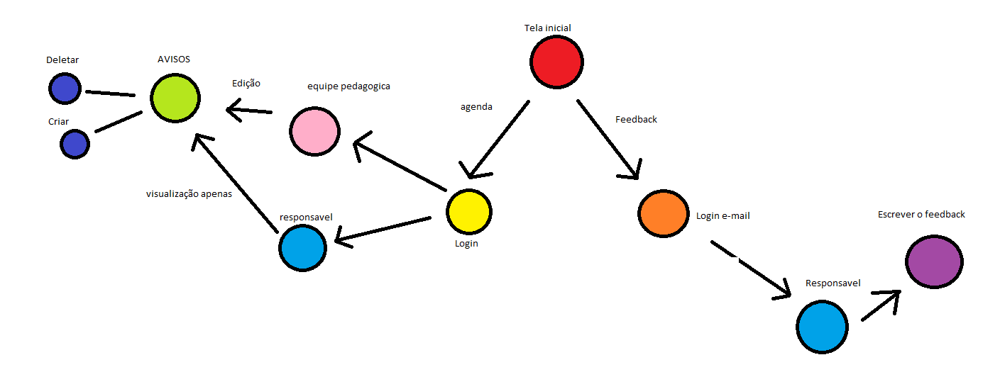

O projeto consiste no desenvolvimento de um aplicativo ou site exclusivo (agenda virtual) para centralizar, organizar e otimizar a comunicação entre a coordenação pedagógica, alunos, pais e responsáveis. O objetivo principal é solucionar a desorganização e as falhas semanais no repasse de avisos importantes e criar um canal formal para a gestão de reclamações e sugestões.
O colégio enfrenta falhas semanais de comunicação devido à falta de um sistema centralizado para o envio de avisos escolares, o que faz com que pais e alunos percam recados importantes e gera retrabalho e desentendimentos para a equipe pedagógica. Além disso, não há um canal oficial e organizado para o recebimento de sugestões ou reclamações pela secretaria, e o uso atual de soluções improvisadas ou informais para tentar resolver esses problemas são mal estruturadas ou insuficientes.

Acesse a página de documentação da equipe em CLIQUE AQUI.